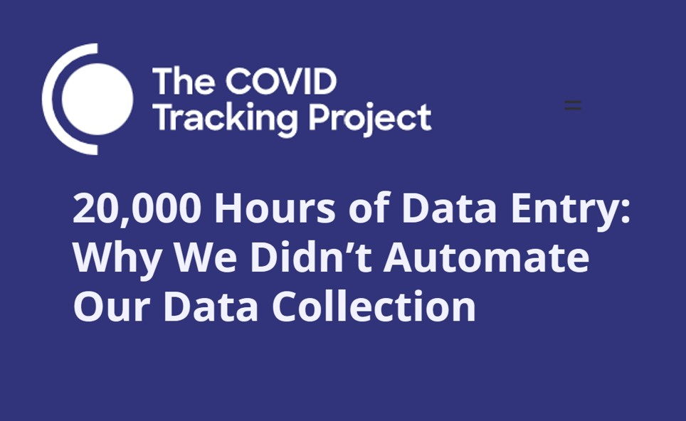

Things can go disastrously wrong in data science and machine learning projects when we undervalue data work, use data in contexts that it wasn’t gathered for, or ignore the crucial role that humans play in the data science pipeline. A new multi-university centre focused on Information Resilience, funded by the Australian government’s top scientific funding body (ARC), has recently launched. Information Resilience is the capacity to detect and respond to failures and risks across the information chain in which data is sourced, shared, transformed, analysed, and consumed. I’m honored to be a member of the strategy board, and I have been thinking about what information resilience means with respect to data practices. Through a series of case studies and relevant research papers, I will highlight these risks and point towards more resilient practices.
Case study: UK covid tracking app
Data from a covid-symptom tracking app was used in a research paper to draw wildly inaccurate conclusions about the prevalence of Long Covid, the often debilitating neurological, vascular, and immune disease that can last for months or longer (some patients have been sick for 20 months and counting). The app suggested that only 1.5% of patients still experience symptoms after 3 months, an order of magnitude smaller than estimates of 10-35% being found by other studies.
How could this research project have gone so wrong? Well, the app had been designed for a completely different purpose (tracking 1-2 week long respiratory infections), didn’t include the most common Long Covid symptoms (such as neurological dysfunction), had a frustrating user-interface that led many patients to quit using it, and made the erroneous assumption that those who stopped logging must be fully recovered. The results from this faulty research paper were widely shared, including in a BBC article, offering false reassurance than Long Covid prevalence is much rarer than it is. Patients had been voicing their frustrations with the app all along, and if researchers had listened sooner, they could have collected a much higher quality and more accurate data set.
This research failure illustrates a few common issues in data projects:
- The context of the data was not taken into account. The user-interface, the categories listed, the included features– these were all designed to record data about a short-term mild respiratory infection. However, when it was used for a different purpose (long covid patients suffering for months with vascular and neurological symptoms), it did a poor job, and led to missing and incomplete data. This happens all too often, in which data gathered for one context is used for another
- The people most impacted (long covid patients) were ignored. They had the most accurate expertise on what long covid actually entailed, yet were not listened to. Ignoring this expertise led to lower quality data and erroneous research conclusions. Patients have crucial domain expertise, which is distinct from that of doctors, and must be included in medical data science projects. From the start of the pandemic, patients who had suffered from other debilitating post-viral illnesses warned that we should be on the lookout for long-term illness, even in initially “mild” cases.
Data is Crucial
Collecting data about covid and its long-term effects directly from patients was a good idea, but poorly executed in this case. Due to privacy and surveillance risks, I frequently remind people not to record data that they don’t need. However, the pandemic has been a good reminder of how much data we really do need, and how tough it is when it’s missing.
At the start of the pandemic in the United States, we had very little data about what was happening– the government was not tabulating information on cases, testing, or hospitalization. How could we know how to react when we didn’t understand how many cases there were, what death rates were, how transmissible the disease was, and other crucial information? How could we make policy decisions in the absence of a basic understanding of the facts.
In early March 2020, two journalists and a data scientist from a medication-discovery platform began pulling covid data together into a spreadsheet to understand the situation in the USA. This launched into a 15-month long project in which 500 volunteers compiled and published data on COVID-19 testing, cases, hospitalizations, and deaths in the USA. During those 15 months, the Covid Tracking Project was the most comprehensive source of covid data in the USA, even more comprehensive than what the CDC had, and it was used by the CDC, numerous government agencies, and both the Trump and Biden Administrations. It was cited in academic studies and in thousands of news articles.

A data infrastructure engineer and contributor for the project later recounted, “It quickly became apparent that daily, close contact with the data was necessary to understand what states were reporting. States frequently changed how, what, and where they reported data. Had we set up a fully automated data capture system in March 2020, it would have failed within days.” The project used automation as a way to support and supplement manual work, not to replace it. At numerous points, errors in state reporting mechanisms were caught by eagle-eyed data scientists notifying discrepancies.
This vision of using automation to support human work resonates with our interest at fast.ai in “augmentedML”, not “autoML”. I have written previously and gave an AutoML workshop keynote on how too often automation ignores the important role of human input. Rather than try to automate everything (which often fails), we should focus on how humans and machines can best work together to take advantage of their different strengths.
Data Work is Undervalued
Interviews of 53 AI practitioners across 6 countries on 3 continents found a pattern that is very familiar to many of us (including me) who work in machine learning: “Everyone wants to do the model work, not the data work.” Missing meta-data leads to faulty assumptions. Data collection practices often conflict with the workflows of on-the-ground partners, such as nurses or farmers, who are usually not compensated for this extraneous effort. Too often data work is arduous, invisible, and taken for granted. Undervaluing of data work leads to poor practices and often results in negative, downstream events, including dangerously inaccurate models and months of lost work.
Throughout the pandemic, data about covid (both initial cases and long covid) has often been lacking. Many countries have experienced testing shortages, leading to undercounts of how many people have covid. The CDC decision not to track breakthrough cases unless they resulted in hospitalization made it harder to understand prevalence of break-throughs (a particularly concerning decision since break-throughs can still lead to long covid). In September, it was revealed that British Columbia, Canada was not including covid patients in their ICU counts once the patients were no longer infectious, a secretive decision that obscured how full ICUs were. Some studies of Long Covid have failed to include common symptoms, such as neurological ones, making it harder to understand the prevalence or nature.
Data has Context
Covid is giving us a first-hand view of how data, which we may sometimes want to think of as “objective”, are shaped by countless human decisions and factors. In the example of the symptom tracking app, decisions about which symptoms were included had a significant impact on the prevalence rate calculated. Design decisions that influenced the ease of use impacted how much data was gathered. Lack of understanding of how the app was being used (and why people quit using it) led to erroneous decisions about which cases should be considered “recovered”. These are all examples of the context for data. Here, the data gathered was reasonably appropriate for understanding initial covid infections (a week or two of respiratory symptoms), but not for patients experiencing months of neurological and vascular symptoms. Numbers can not stand alone, we need to understand how they were measured, who was included and excluded, relevant design decisions, under what situations a dataset is appropriate to use vs. not.
As another example, consider covid testing counts: Who has access to testing (this involves health inequities, due to race or urban vs. rural), who is encouraged to get tested (at various times, people without symptoms, children, or other groups have been discouraged from doing so), varying accuracies (e.g. PCR tests are less accurate on children, missing almost half of cases that later go on to seroconvert), and making decisions about what counts as a “case” (I know multiple people who had alternating test results: positive, negative, positive, or the reverse– what counts as a positive case?)
One proposal for capturing this context is Datasheets for Datasets. Prior to doing her PhD at Stanford in computer vision and then co-leading Google’s AI ethics team, Dr. Timnit Gebru worked at Apple in circuit design and electrical engineering. In electronics, each component (such as a circuit or transistor) comes with a datasheet that lists when and where it was manufactured, under what conditions it is safe to use, and other specifications. Dr. Gebru drew on this background to propose a similar idea for datasets: listing the context of when and how it was created, what data was included/excluded, recommended uses, potential biases and ethical risks, work needed to maintain it, and so on. This is a valuable proposal towards making the context of data more explicit.
The People Most Impacted
The inaccurate research and incomplete data from the covid tracking app could have been avoided by drawing on the expertise of patients. Higher quality data could have been collected sooner and more thoroughly, if patients were consulted in the app design and in the related research studies. Participatory approaches to machine learning is an exciting and growing area of research. In any domain, the people who would be most impacted by errors or mistakes need to be included as partners in the design of the project.
Often, our approaches to addressing fairness or other ethics issues, further centralize the power of system designers and operators. The organizers of an ICML workshop on the topic called for more cooperative, democratic, and participatory approaches instead. We need to think not just about explainability, but about giving people actionable recourse. As Professor Berk Ustun highlights, when someone asks why their loan was denied, usually what they want is not just an explanation but to know what they could change in order to get a loan. We need to design systems with contestability in mind, to include from the start the idea that people should be able to challenge system outputs. We need to include expert panels of perspectives that are often overlooked, depending on the application, this could mean formerly or currently incarcerated people, people who don’t drive, people with very low incomes, disabled people, and many others. The Diverse Voices project from University of Washington Tech Lab provides guidance on how to do this. And it is crucial that this not just be tokenistic participation-washing, but a meaningful, appropriately compensated, and ongoing role in their design and operation.
Towards Greater Data Resilience
I hope that we can improve data resilience through: - Valuing data work - Documenting context of data - Close contact with the data - Meaningful, ongoing, and compensated involvement of the people impacted
And I hope that when our data represents people we can remember the human side. As AI researcher Inioluwa Deborah Raji wrote, “Data are not bricks to be stacked, oil to be drilled, gold to be mined, opportunities to be harvested. Data are humans to be seen, maybe loved, hopefully taken care of.”